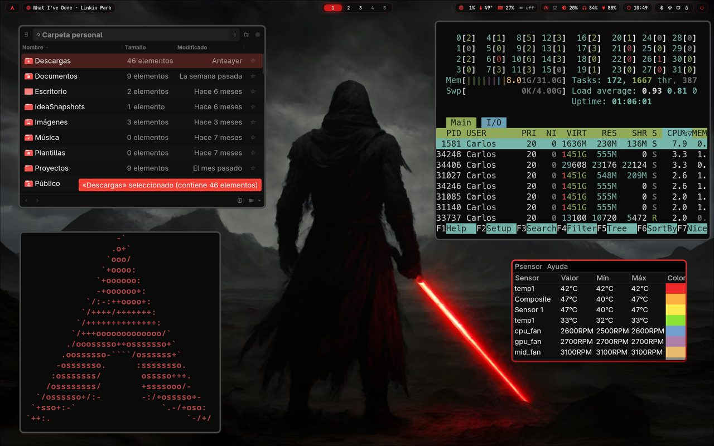
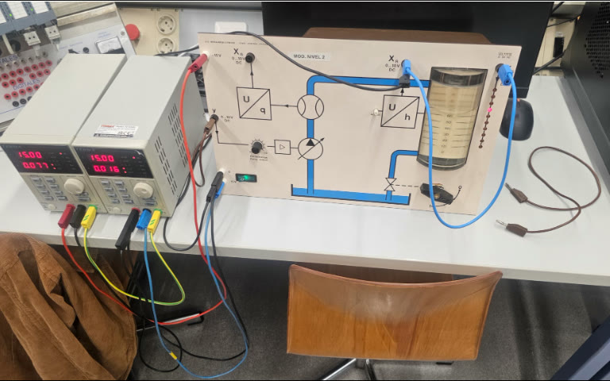
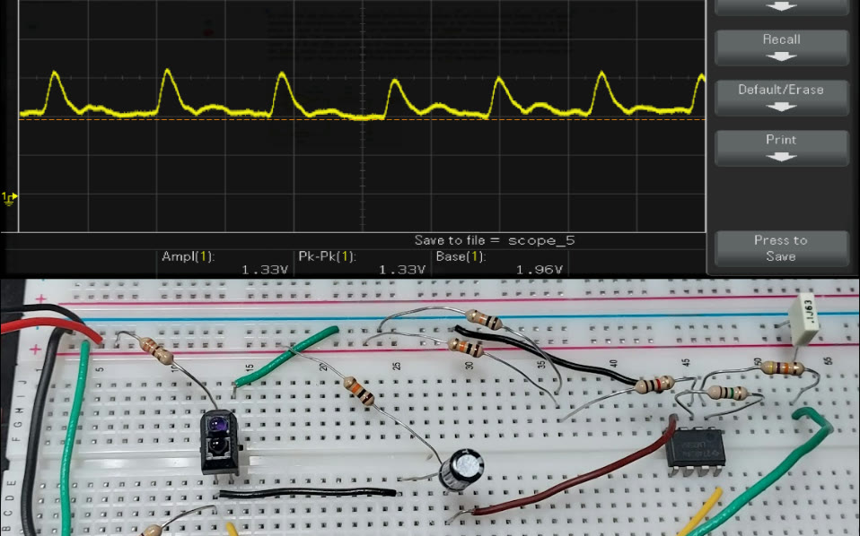
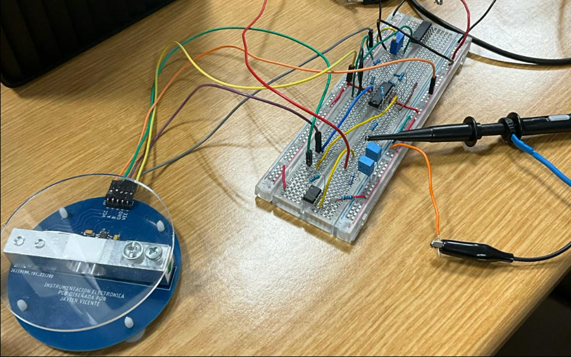
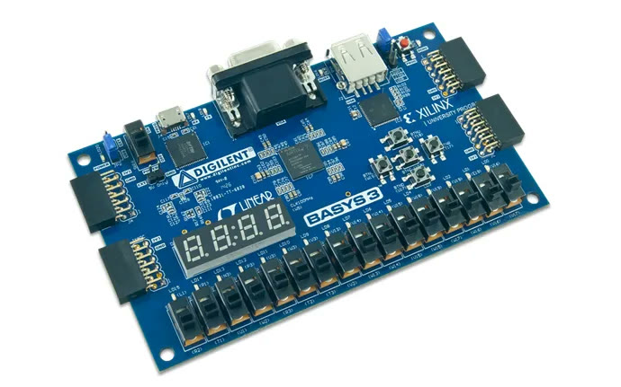
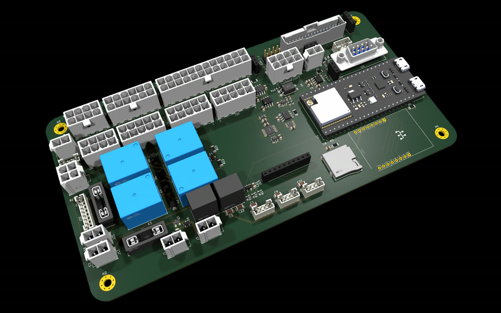
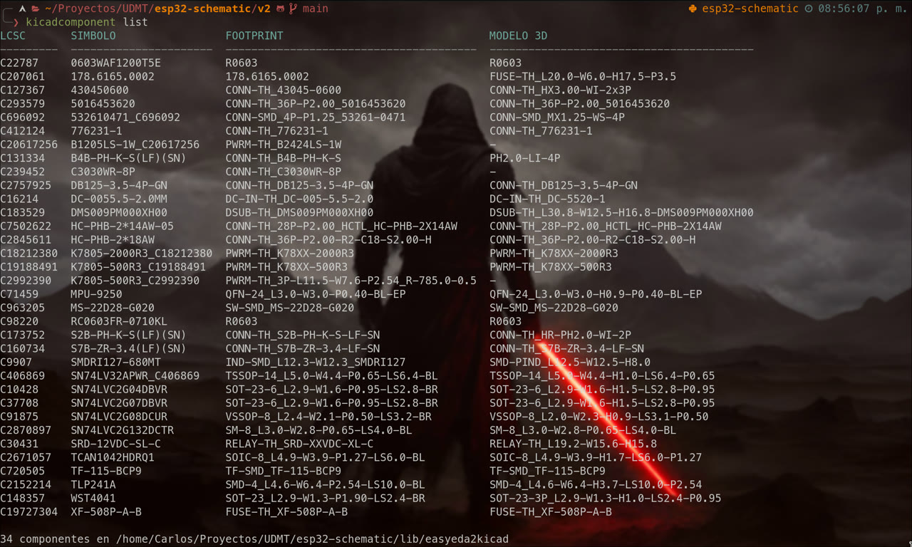
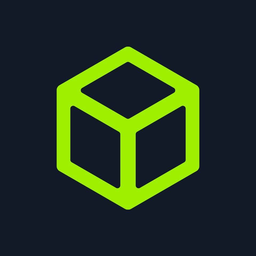
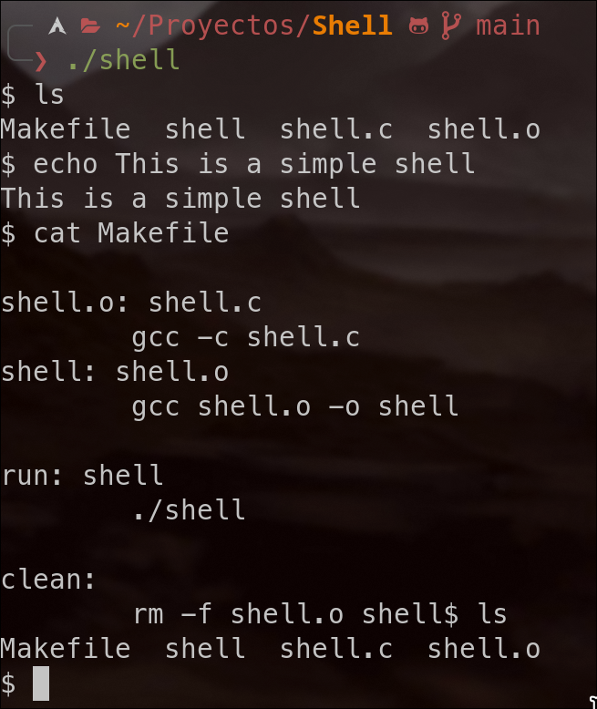

Projects
-
Robotics · High school
Robotic arm
Built in high school, with no prior experience, no outside help and before AI tools were available: an arm made from wood and micro servos, moved in real time with a joystick connected to an Arduino.
- Arduino
- C++
- Servos
-
Robotics · High school
Drone
Also built in high school, on my own and without AI tools: a quadcopter on a wooden frame carrying the first PCB I ever designed, controlled over Bluetooth from a phone app I made with MIT App Inventor, a free tool from MIT. It never flew properly because of design mistakes, but it was my starting point in hardware.
- Arduino
- C++
- PCB design
- Bluetooth
- MIT App Inventor
-
Game · First year
Survival Shooter
My first game, made in my first year of university, before AI coding assistants were around: an Asteroids-style space shooter where you fly a ship, destroy asteroids and stars and pick up shields for extra lives. Each player logs in and their scores are saved.
- Java
- Swing
-
Electric powertrain · Deusto Moto Team
Motor spin test
Bench test of the electric powertrain for Deusto Moto Team's racing motorbike, on a test bench I designed and assembled myself: the motor spinning, driven by its motor controller and powered by the 24S12P test battery, with the high-voltage cabling and the control electronics wired up. It is the step that proves the whole chain works before the motor goes into the bike.
- Electric motor
- Motor controller
- 24S12P battery
- Wiring
- Testing
-

Linux
Arch Linux + Hyprland desktop
My own Arch Linux desktop on Hyprland, built entirely from scratch by me: custom SDDM theme, development tools and a pentesting environment. I then automated the whole setup with my dotfiles, so I can reinstall it quickly if I ever lose it.
- Shell
- Arch Linux
- Hyprland
-

Industrial automation · Team of 3
PI level control of a water tank
Project for Advanced Industrial Automation, in a team of three: a Siemens S7-1500 PLC programmed in TIA Portal keeps the water level of a tank at its setpoint with the PID_Compact block, set up as a PI controller and tuned with its auto-tuning. It holds the level through setpoint changes and disturbances, such as opening the outlet valve. We did every part together, with equal contributions.
- S7-1500
- TIA Portal
- PID_Compact
-
Robotics · Team of 3
UR3e cube stacking
Project for Advanced Industrial Automation, in a team of three: a UR3e robot arm that stacks cubes, programmed first from the robot's own console and then in Python over RTDE. My part: the reusable motion functions and the change of base.
- UR3e
- Python
- RTDE
-

Analog electronics · Solo
Heart-pulse amplifier
Project for Electronic Technology, which I built on my own in December 2025: a TCRT5000 infrared sensor picks up the pulse from a fingertip, a high-pass filter removes the DC component, an LM358 amplifies it with a gain of 1000 and a low-pass filter cleans up the noise. The signal goes from millivolts to volts, checked on an oscilloscope and with an Arduino as a low-cost scope.
- Op-amp
- Filters
- Oscilloscope
- Arduino
-

Instrumentation · Team of 2
Signal conditioning for a scale
Project for Electronic Instrumentation, done in a pair: a bridge with a load cell followed by four amplification stages, simulated in PSpice and characterised in the lab. My part: the hardware design.
- Instrumentation
- PSpice
- LM324
-

Digital design · Team of 3
FPGA-controlled vehicle
Project for Programmable Logic, in a team of three, graded 10 out of 10: a vehicle controlled by a Basys 3 FPGA. My part was the steering: a potentiometer read through the XADC, a filter and the PWM signal for the servo. The group added the ultrasonic sensors and the automatic braking.
- VHDL
- Basys 3
- XADC
-
Embedded · Team of 3
Access control with STM32 and RFID
Project for Microprocessors, in a team of three: an access control system on an STM32, with a barrier moved by a servo and an LCD screen. My part was the RFID reader, porting a C++ library to C.
- STM32
- C
- RFID
-

Hardware · PCB
Motorbike control board
Deusto Moto Team's central PCB, designed in KiCad: a 4-layer board built around an ESP32-S3 that manages the states of the bike. It includes the shutdown chain and reads GPS, IMU, Hall-effect and temperature sensors. The first version is manufactured; the second is in design.
- KiCad
- ESP32-S3
- 4-layer PCB
- C/C++
-

Tooling · Python
kicadcomponent
Command-line tool that adds and removes LCSC/EasyEDA components in a KiCad project, keeping symbol, footprint and 3D model in sync. I wrote the functional specification and published it on PyPI; the code was written by an AI.
- Python
- KiCad
- PyPI
- AI-written code
-

Cybersecurity
Hack The Box labs
Courses and vulnerable machines on Hack The Box to learn networking, Linux and offensive security, working from my own Kali Linux setup.
- Kali Linux
- Networking
- Shell
-
Web
This portfolio
Hand-written HTML and CSS, without frameworks, to learn web layout from the ground up: grid, flexbox and responsive design.
- HTML
- CSS
-

Systems · C
Unix shell
A small shell written in C that reads commands, splits them into arguments and runs them in child processes with fork and execvp.
- C
- POSIX
- Make
-
CAN · MQTT · InfluxDB
Embedded · IoT
MotoStudent telemetry test
First test of the telemetry for Deusto Moto Team's electric racing motorbike: I read the ECU's CAN frames with PCAN-View and sent test messages from an ESP32 over MQTT (Mosquitto) to InfluxDB, all running in Docker. It stayed at this first test; the dashboards were never built.
- ESP32
- C/C++
- CAN
- PCAN-View
- MQTT
- InfluxDB
- Docker
-
QEMU boot screen
Low level · Exploration
Hello World kernel
An exploration, not a finished project: a minimal x86 kernel in C, booted with GRUB in QEMU, to understand what happens between the power button and the first line on screen.
- C
- GRUB
- QEMU
-
photo of the car
Robotics · Mobile · Since 2024
Bluetooth RC car
Started in 2024 and still far from finished: a car built around an Arduino Nano with a Bluetooth module, motor controller and servo, meant to be driven from an Android app made with Android Studio. Part of my robotics projects, together with a robotic arm and a drone.
- Arduino
- C++
- KiCad
- Android Studio